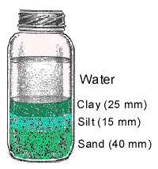
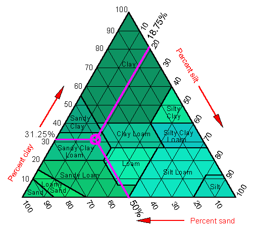

Soil texture class test
The natural soil consists usually of a mixture of sand, silt and clay. If a soil contains mostly sand and some clay then we would call it clayey sand. There exists an international texture classification that refers to the descriptive names of the soil. In this classification the descriptive names refer to a percentage composition with the following size limitations:
Sand
2.0 to 0.06 mm diameter
Silt 0.06
to 0.002 mm diameter
Clay
smaller than 0.002 mm diameter

The find the percentage distribution of sand, silt and clay a soil sample
from the site should be taken.
Fill a container with water and add the soil sample to it.
Shake the container vigorously and leave it standing until the soil particles
have settled.
Then measure the layer thickness of each layer as shown in Figure 3.
All layers add up to 80 mm. We find the percentage of the different layers
by dividing the single layer thickness by the total thickness of all layers
(that is 80 mm.). The percentages are shown below.
Figure
3
| Percentage of clay |
= 25/80 |
= 31.25 % |
| Percentage of silt |
= 15/80 |
= 18.75 % |
| Percentage of sand |
= 40/80 |
= 50.00 % |
A textural classification chart is shown in Figure 4 below. To find the
soil classification place the percentage figure on the chart as shown.
Knowing the percentage distribution of a specific soil any classification
can be quickly worked out.

Figure 4
Soil texture class descriptions
Sand
Soil consisting mostly of coarse and fine sand, and containing so little
clay that it is loose when dry and not sticky at all when wet. When rubbed
it leaves no film on the fingers.
Loamy sand
Consisting mostly of sand, but with sufficient clay to give slight plasticity
and cohesion when very moist. Leaves slight film of fine materials on
the fingers when rubbed.
Sandy loam
Soil in which the sand fraction is quite obvious, which moulds readily
when sufficient moist, but in most cases does not stick appreciably to
the fingers. Threads do not form easily.
Loam
Soil in which the fractions are so blended that it moulds readily when
sufficient moist, and sticks to the fingers to some extent. It can with
difficulty be moulded into threads but will not bend into a small ring.
Silt loam
Soil that is moderately plastic without being very sticky and in which
the smooth, soapy feel of the silt is the main feature.
Sandy clay loam
Soils containing sufficient clay to be distinctly sticky when moist, but
in which the sand fraction is an obvious feature.
Clay loam
The soils is distinctly sticky when sufficiently moist, and the presence
of sand fraction can only be detected with care.
Silty clay loam
This contains quite subordinate amounts of sand, but sufficient silt to
confer something of a smooth, soapy feel. It less sticky than silty clay
or clay loam.
Silt
Soil in which the smooth, soapy feel of silt is dominant.
Sandy clay
The soil is plastic and sticky when moistened sufficiently, but the sand
fraction is still an obvious feature. Clay and sand are dominant, and
the intermediate grades of silt and very fine sand are less apparent.
Silty clay
Soil which is composed of almost very fine material, but in which the
smooth, soapy feel of the silt fraction modifies some extent the stickiness
of the clay.
Clay
The soil is plastic and sticky when moistened sufficiently and gives a
polish surface on rubbing. When moist the soil can be rolled into threads,
and it is capable of being moulded into any shape and takes clear fingerprints.
|